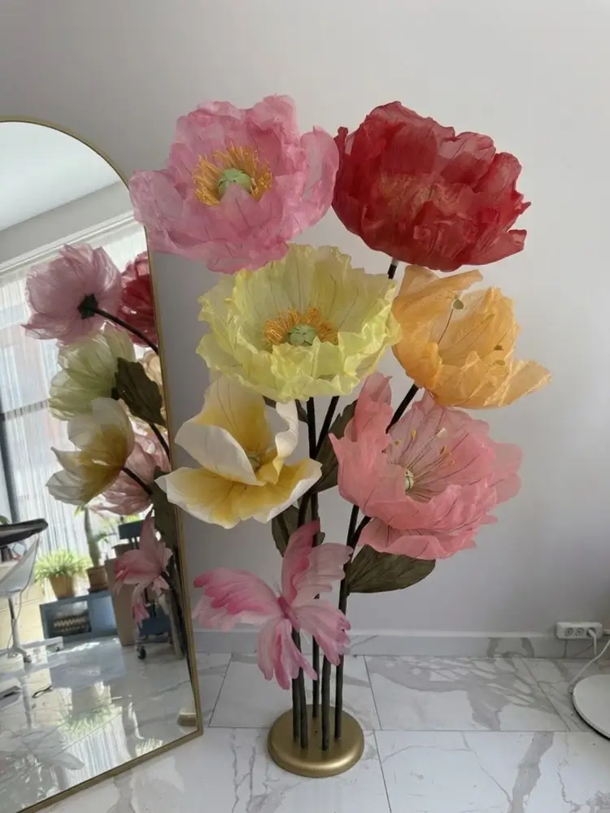

Atölye
Atölyemiz ve çalışma şeklimiz
Eden Floral Art, Elif ve Seren'in atölyesinde tül, krapon ve organzeden dev çiçekleri tek tek elde hazırlayan bir dev çiçek tasarım markasıdır. Sipariş Instagram DM'den başlar, dört adımda ilerler ve Türkiye geneline kargoyla gönderilir.
Son güncelleme: · Eden Floral Art

Kimler yapıyor?
Eden Floral Art'ı Elif ve Seren kurdu. Çiçekler atölyede, tek tek ve elde hazırlanır; her yaprak elde kesilir, her çiçek sabırla şekillenir. Atölyedeki çiçek koleksiyonu, her sene birkaç çiçek eklenerek bugünkü haline geldi.
Hangi malzemelerle çalışıyoruz?
Tül, krapon (krepon kağıdı) ve organze. Krapon (kağıt) çiçekler güneşten etkilenebilir; tül ve organze etkilenmez. Farkları Kağıt çiçek mi, kumaş çiçek mi? yazısında anlattık; yapılış için Dev kağıt çiçek nedir, nasıl yapılır? yazısına bakabilirsiniz.
Sipariş nasıl ilerliyor?
- DM'den yazın. Renk, tarih ve hayalinizi Instagram'dan (@eden.floralart) bize iletin.
- Tasarım ve fiyat. Size özel tasarımı ve fiyatı birlikte netleştirelim.
- Üretim. Çiçekleriniz atölyede tek tek elde hazırlanır; üretim, tasarıma göre 1–3 hafta sürebilir.
- Kargo ve kurulum. Hazır olunca Türkiye geneline kargoyla en fazla 3–4 günde ulaşır; yerinde kurulum genellikle İstanbul ve İzmir'de.
Genellikle 2–3 hafta önceden sipariş vermenizi öneriyoruz; ne kadar erken olursa o kadar iyi. Kargo süresi üretime dahil değildir, kargo ücreti paketin boyutuna göre değişir. Fiyat, boyuta, adede, renge ve kapsama göre değişir; sabit bir liste yoktur.
Nerede hizmet veriyoruz?
Satın alma her şehirde mümkündür; çiçekler özenle paketlenip Türkiye'nin her yerine kargoyla gönderilir. Kiralama ve yerinde kurulum İstanbul ve İzmir'de yapılır. Ayrıntı için Dev çiçek kiralama mı, satın alma mı? yazısına bakın.
Çalıştığımız yerlerden örnekler
- BIRELIN Nişantaşı: mağaza vitrini için ışıklı, tül ve organze dev çiçek dekoru.
- @ginzadesignjewelry: vitrin ve dinlenme köşesi için şakayık, dandelion ve lilyum dekoru.
- Tekirdağ düğünü: lilyum setimizle gelin-damat yolu ve takı töreni; çiçeklerle biz de Tekirdağ'a gittik.
- @zumicoevent: doğum odası önü için tül ve kreponla çiçek aranjmanı.
Daha fazlası için İşlerimiz sayfasına, hazır modeller için mağazaya göz atabilirsiniz. Atölyenin konumu harita bağlantısında.